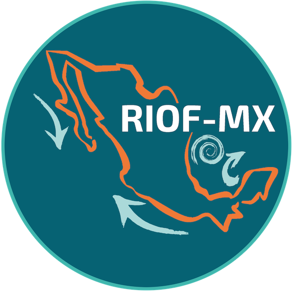

La red busca acercar a l@s investigador@s en oceanografía física y áreas afines con el propósito de promover y fomentar la colaboración entre los distintos grupos del país. Queremos establecer una red de apoyo para quienes recién inician su carrera académica –como posdoctorantes, catedrátic@s e investigadores– dando a conocer su trabajo y creando espacios para convivir y colaborar.
Para ello organizamos los siguientes eventos: * [Seminario](https://anakarinarm.github.io/RIOF/seminario/) Pláticas quincenales tipo webinar para presentar la investigación realizada por la comunidad. * [Incubadora de proyectos](https://anakarinarm.github.io/RIOF/incubadora/) Reuniones mensuales para discutir ideas, proyectos y establecer colaboraciones con la comunidad.